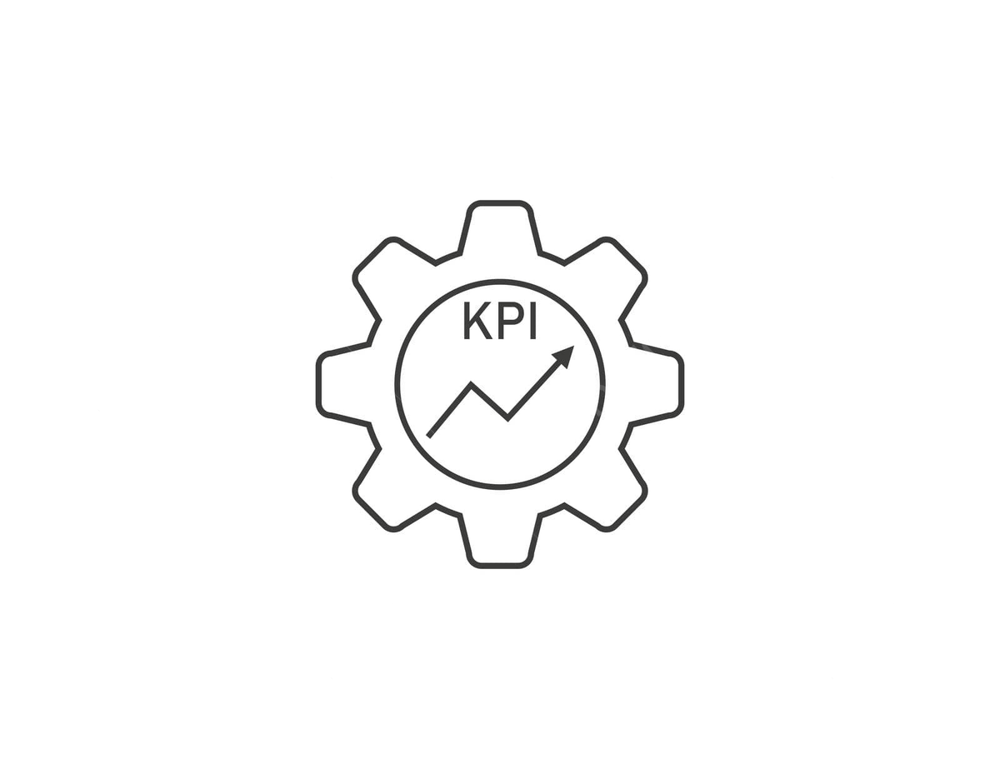
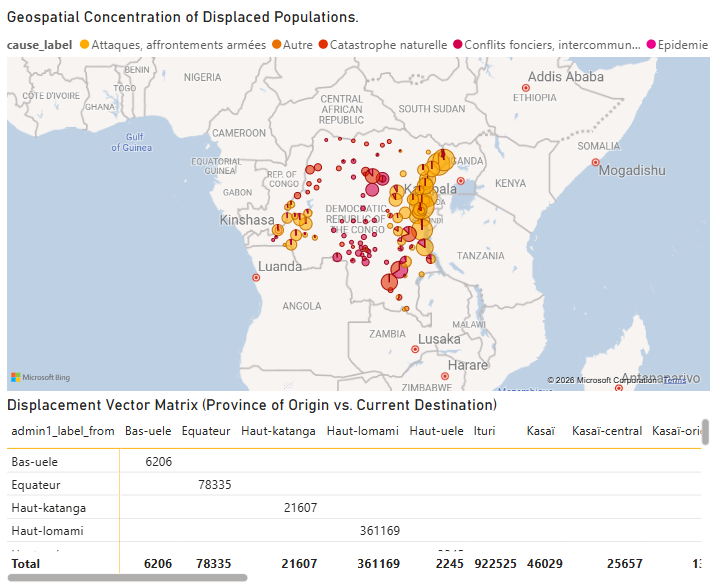

-
 Excel Analysis
Excel Analysis
Data cleaning, PivotTables, KPI reporting, and automation using Microsoft Excel.
-
 SQL Queries
SQL Queries
Extracting, filtering, and analyzing data from databases using SQL.
-
 Power BI Dashboards
Power BI Dashboards
Building interactive dashboards for business intelligence and decision-making.
-

KPI ReportingCreating performance reports to support data-driven decision making.
featured

Humanitarian Data Dashboard
I designed a Power BI dashboard to analyze humanitarian aid distribution, displacement trends, and logistics performance in conflict-affected regions.
Tools used: Excel, Power Query, Power BI, and DAX to create KPIs and interactive visualizations.
This project demonstrates my ability to turn raw data into meaningful insights for NGOs and organizations.
Data Analytics
I am a Data Analyst and Computer Science graduate specialized in Excel, SQL, and Power BI. I also work as an IT trainer helping students and professionals build data skills.
Gloire Mufungizi